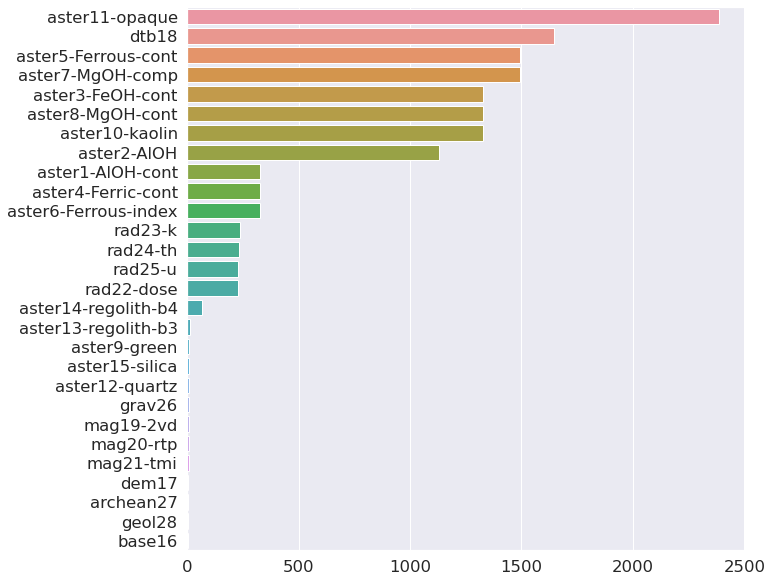
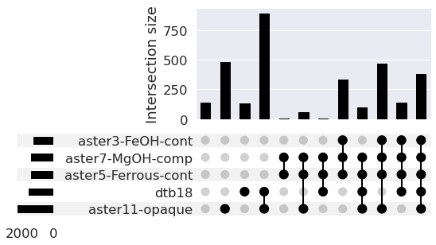
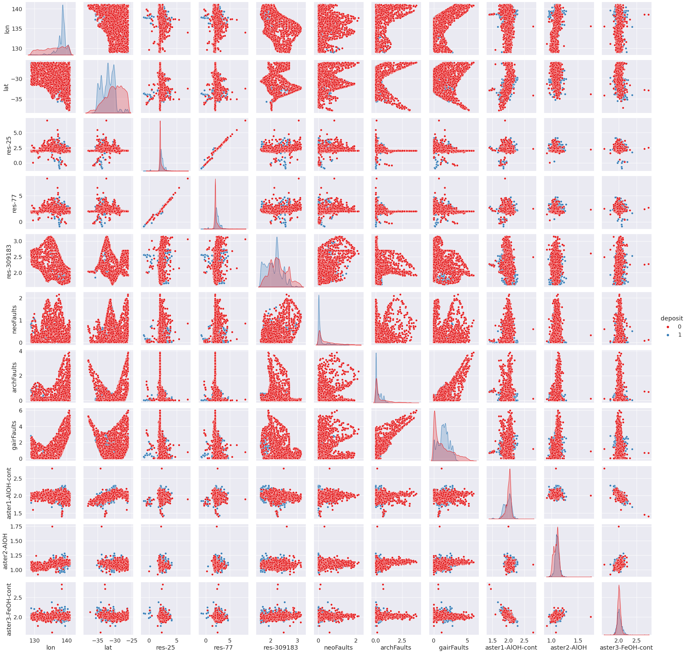
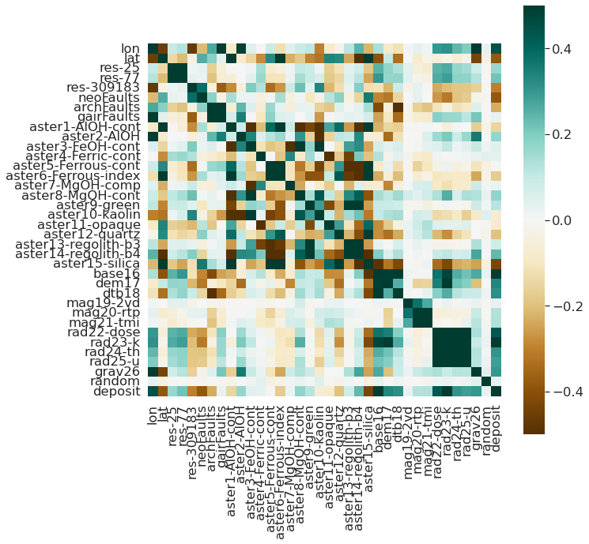
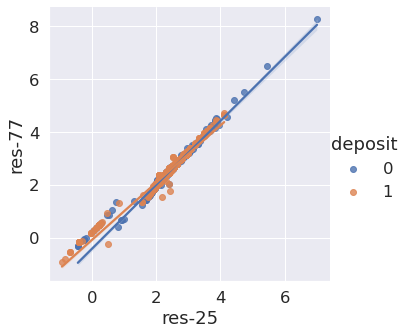

# Disable some warnings produced by pandas etc.
# (Don't do this in your actual analyses!)
import warnings
warnings.simplefilter('ignore', category=UserWarning)
warnings.simplefilter('ignore', category=FutureWarning)
warnings.simplefilter('ignore', category=RuntimeWarning)
import matplotlib.pyplot as plt
import numpy as np
import pandas as pd
import statsmodels.api as sm
import seaborn as sns
from sklearn import preprocessing
from sklearn import model_selection
#You probably do not have this library! Install it with pip:
#!pip install UpSetPlot
import upsetplot
%matplotlib inline
sns.set(font_scale = 1.5)Exploratory Data Analysis (EDA) for ML
Objectives
- Introduce some of the key packages for EDA and ML.
- Introduce and explore an dataset for ML
- Clean up a dataset
- Install additional Python libraries
First, let’s load the required libraries. We will use the sklearn library for our ML tasks, and the pandas, numpy, matplotlib seaborn and upsetplot libraries for general data processing and visualisation.
Load the data
Download the data and put it in your “data” folder. You will have to download it from the GitHub repo (right click on the Download button and select “Save link as..”). Our data is based on a submitted Manuscript (Butterworth and Barnett-Moore 2020) which was a finalist in the Unearthed, ExploreSA: Gawler Challenge.
The dataset contains a mix of categorical and numerical values, representing various geophysical and geological measurements across the Gawler Craton in South Australia.
#ameshousingClean = pd.read_csv('data/AmesHousingClean.csv')
#ameshousingClean = pd.read_csv('../data/training_data-DIA.txt')
#training_data-Cu.txt
#Read in the data
#Set a value for NaNs
#Drop many of the columns (so it is easier to work with)
df = pd.read_csv('../data/training_data-Cu.csv',na_values='-9999.0')
cols = list(range(5,65))
cols.insert(0,0)
df.drop(df.columns[cols],axis=1,inplace=True)
df=df.astype({'archean27':'object','geol28':'object','random':'int64','deposit':'int64'})Exploratory data analysis
Exploratory data analysis involves looking at:
- the distribution of variables in your dataset
- whether any data is missing
- skewed
- correlated variables
#What are the dimensions of the data?
df.shape(3138, 38)#Look at the data:
df.head()| lon | lat | res-25 | res-77 | res-309183 | neoFaults | archFaults | gairFaults | aster1-AlOH-cont | aster2-AlOH | ... | mag21-tmi | rad22-dose | rad23-k | rad24-th | rad25-u | grav26 | archean27 | geol28 | random | deposit | |
|---|---|---|---|---|---|---|---|---|---|---|---|---|---|---|---|---|---|---|---|---|---|
| 0 | 129.106649 | -26.135900 | 1.9959 | 1.9935 | 2.5780 | 0.858696 | 0.874997 | 2.718781 | 1.907609 | NaN | ... | -88.364891 | 34.762928 | 1.269402 | 6.065621 | 38.492386 | 27.176790 | 14552.0 | 17296.0 | 999 | 1 |
| 1 | 132.781571 | -26.151144 | 2.0450 | 2.0651 | 2.3873 | 0.607134 | 0.936479 | 1.468679 | 2.032987 | 1.076198 | ... | -190.025864 | 89.423668 | 3.169631 | 15.980172 | 56.650471 | -83.541550 | 14552.0 | 17068.0 | -999 | 1 |
| 2 | 132.816676 | -26.159202 | 2.0450 | 2.0651 | 2.3873 | 0.577540 | 0.914588 | 1.446256 | 1.982274 | 1.050442 | ... | -251.018036 | 75.961006 | 2.525403 | 15.625917 | 58.361298 | -81.498817 | 14552.0 | 17296.0 | -999 | 1 |
| 3 | 128.945869 | -26.179362 | 1.9978 | 1.9964 | 2.6844 | 0.810394 | 0.826784 | 2.813603 | 1.947705 | NaN | ... | 873.983521 | 46.321651 | NaN | NaN | 50.577263 | 33.863503 | NaN | NaN | -999 | 1 |
| 4 | 132.549807 | -26.185500 | 2.0694 | 2.0999 | 2.3574 | 0.652131 | 1.026991 | 1.499793 | 1.977050 | 1.064977 | ... | 71.432777 | 47.194534 | 2.367707 | 6.874684 | 29.794928 | -90.970375 | 14552.0 | 17296.0 | -999 | 1 |
5 rows × 38 columns
#What types are each of the columns?
df.dtypeslon float64
lat float64
res-25 float64
res-77 float64
res-309183 float64
neoFaults float64
archFaults float64
gairFaults float64
aster1-AlOH-cont float64
aster2-AlOH float64
aster3-FeOH-cont float64
aster4-Ferric-cont float64
aster5-Ferrous-cont float64
aster6-Ferrous-index float64
aster7-MgOH-comp float64
aster8-MgOH-cont float64
aster9-green float64
aster10-kaolin float64
aster11-opaque float64
aster12-quartz float64
aster13-regolith-b3 float64
aster14-regolith-b4 float64
aster15-silica float64
base16 float64
dem17 float64
dtb18 float64
mag19-2vd float64
mag20-rtp float64
mag21-tmi float64
rad22-dose float64
rad23-k float64
rad24-th float64
rad25-u float64
grav26 float64
archean27 object
geol28 object
random int64
deposit int64
dtype: object#Get information about index type and column types, non-null values and memory usage.
df.info()<class 'pandas.core.frame.DataFrame'>
RangeIndex: 3138 entries, 0 to 3137
Data columns (total 38 columns):
# Column Non-Null Count Dtype
--- ------ -------------- -----
0 lon 3138 non-null float64
1 lat 3138 non-null float64
2 res-25 3138 non-null float64
3 res-77 3138 non-null float64
4 res-309183 3138 non-null float64
5 neoFaults 3138 non-null float64
6 archFaults 3138 non-null float64
7 gairFaults 3138 non-null float64
8 aster1-AlOH-cont 2811 non-null float64
9 aster2-AlOH 2010 non-null float64
10 aster3-FeOH-cont 1811 non-null float64
11 aster4-Ferric-cont 2811 non-null float64
12 aster5-Ferrous-cont 1644 non-null float64
13 aster6-Ferrous-index 2811 non-null float64
14 aster7-MgOH-comp 1644 non-null float64
15 aster8-MgOH-cont 1811 non-null float64
16 aster9-green 3129 non-null float64
17 aster10-kaolin 1811 non-null float64
18 aster11-opaque 753 non-null float64
19 aster12-quartz 3130 non-null float64
20 aster13-regolith-b3 3127 non-null float64
21 aster14-regolith-b4 3073 non-null float64
22 aster15-silica 3130 non-null float64
23 base16 3135 non-null float64
24 dem17 3133 non-null float64
25 dtb18 1490 non-null float64
26 mag19-2vd 3132 non-null float64
27 mag20-rtp 3132 non-null float64
28 mag21-tmi 3132 non-null float64
29 rad22-dose 2909 non-null float64
30 rad23-k 2900 non-null float64
31 rad24-th 2904 non-null float64
32 rad25-u 2909 non-null float64
33 grav26 3131 non-null float64
34 archean27 3135 non-null object
35 geol28 3135 non-null object
36 random 3138 non-null int64
37 deposit 3138 non-null int64
dtypes: float64(34), int64(2), object(2)
memory usage: 931.7+ KB#Explore how many null values are in the dataset
df.isnull().sum(axis = 0)lon 0
lat 0
res-25 0
res-77 0
res-309183 0
neoFaults 0
archFaults 0
gairFaults 0
aster1-AlOH-cont 327
aster2-AlOH 1128
aster3-FeOH-cont 1327
aster4-Ferric-cont 327
aster5-Ferrous-cont 1494
aster6-Ferrous-index 327
aster7-MgOH-comp 1494
aster8-MgOH-cont 1327
aster9-green 9
aster10-kaolin 1327
aster11-opaque 2385
aster12-quartz 8
aster13-regolith-b3 11
aster14-regolith-b4 65
aster15-silica 8
base16 3
dem17 5
dtb18 1648
mag19-2vd 6
mag20-rtp 6
mag21-tmi 6
rad22-dose 229
rad23-k 238
rad24-th 234
rad25-u 229
grav26 7
archean27 3
geol28 3
random 0
deposit 0
dtype: int64#Find out what's the top missing:
missingNo = df.isnull().sum(axis = 0).sort_values(ascending = False)
missingNo = missingNo[missingNo.values > 0]
missingNoaster11-opaque 2385
dtb18 1648
aster5-Ferrous-cont 1494
aster7-MgOH-comp 1494
aster3-FeOH-cont 1327
aster8-MgOH-cont 1327
aster10-kaolin 1327
aster2-AlOH 1128
aster1-AlOH-cont 327
aster4-Ferric-cont 327
aster6-Ferrous-index 327
rad23-k 238
rad24-th 234
rad25-u 229
rad22-dose 229
aster14-regolith-b4 65
aster13-regolith-b3 11
aster9-green 9
aster15-silica 8
aster12-quartz 8
grav26 7
mag19-2vd 6
mag20-rtp 6
mag21-tmi 6
dem17 5
archean27 3
geol28 3
base16 3
dtype: int64#Plot the missingness with Seaborn
f, ax = plt.subplots(figsize = (10, 10))
sns.barplot(missingNo.values, missingNo.index, ax = ax);
# Use upsetplot to see where missing values occur
# together
# Only use the top 5 columns
missing_cols = missingNo.index[:5].tolist()
missing_counts = (df.loc[:, missing_cols]
.isnull()
.groupby(missing_cols)
.size())
upsetplot.plot(missing_counts);
Why is this useful to know? Can our future data analysis deal with mising data?
Explore the data to see whether there are any unusual relationships between variables
Pull out numeric and categoric variables:
- What data types do I have in my data? Can I infer that some of them are categorical, and others are not?
df.dtypes.value_counts()float64 34
object 2
int64 2
dtype: int64- Pull out the categorical and numerical variables
numericVars = df.select_dtypes(exclude = ['int64','object']).columns
catVars = df.select_dtypes(include = ['object']).columns- Plot the first 11 numerical variables, and their relationship with whether deposit information.
df.shape(3138, 38)#Select which columns to plot (all of them are too many), and be sure to include the "deposit" variable
cols = [np.append(np.arange(0, 11), 37)]
#Make a pairwise plot to find all the relationships in the data
sns.pairplot(df[df.columns[cols].tolist()[0]],hue ="deposit",palette="Set1",diag_kind="kde",diag_kws={'bw': 0.1})<seaborn.axisgrid.PairGrid at 0x7f9d87424520>
Challenge
What variables are the most correlated? Hint: pandas has a function to find e.g. “pearson” corrrelations.
Solution
df.corr()
#Or pick a variable that you want to sort by. And round out the sig figs.
#df.corr().round(2).sort_values('dem17', ascending = False)But, no need to dig through a table! We can plot the relationships.
corr = df.corr()
# Draw the heatmap with the mask and correct aspect ratio
fig, ax = plt.subplots(figsize=(10, 10))
sns.heatmap(corr,
cmap=plt.cm.BrBG,
vmin=-0.5, vmax=0.5,
square=True,
xticklabels=True, yticklabels=True,
ax=ax);
#Plot a regression model through the data
sns.lmplot(
data = df,
x = 'res-25', y = 'res-77',hue='deposit'
);
Key points
- EDA is the first step of any analysis, and often very time consuming.
- Skipping EDA can result in substantial issues with subsequent analysis.
Questions:
- What is the first step of any ML project (and often the most time consuming)?